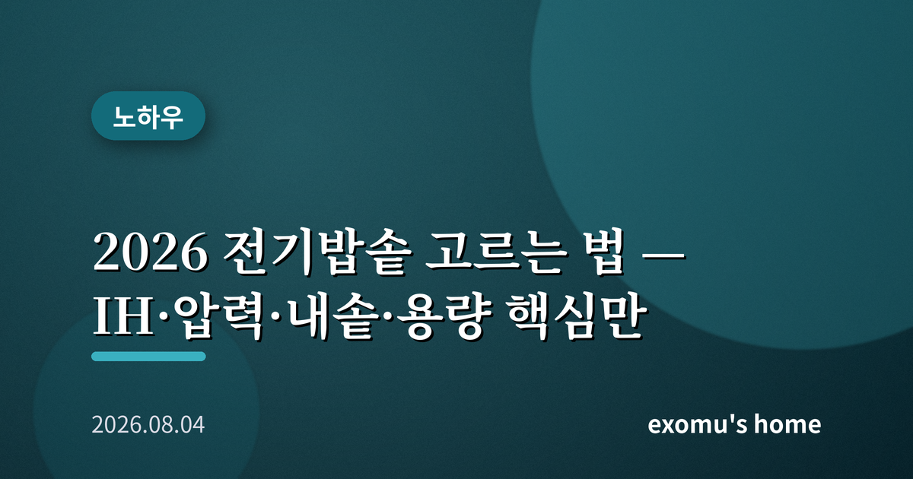
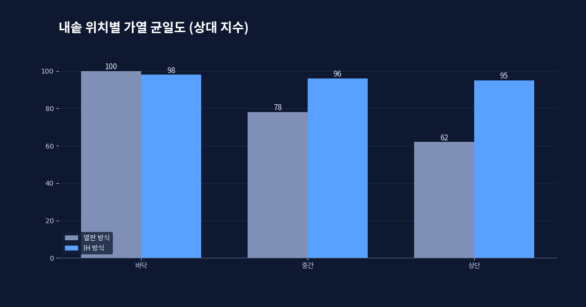
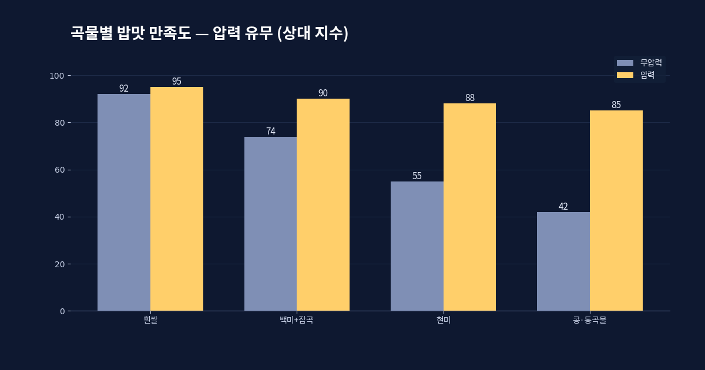
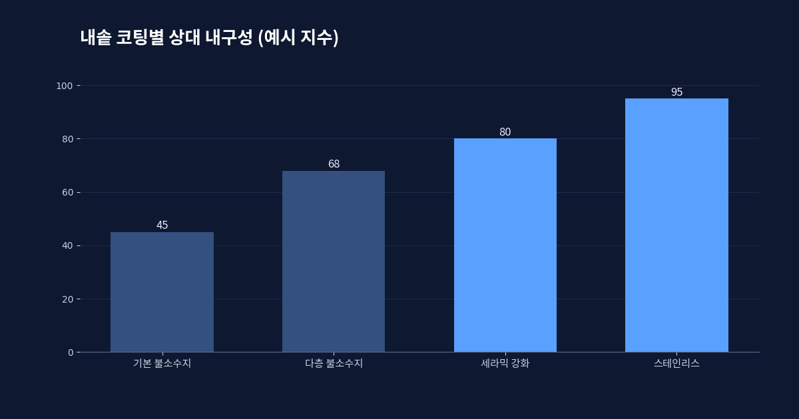
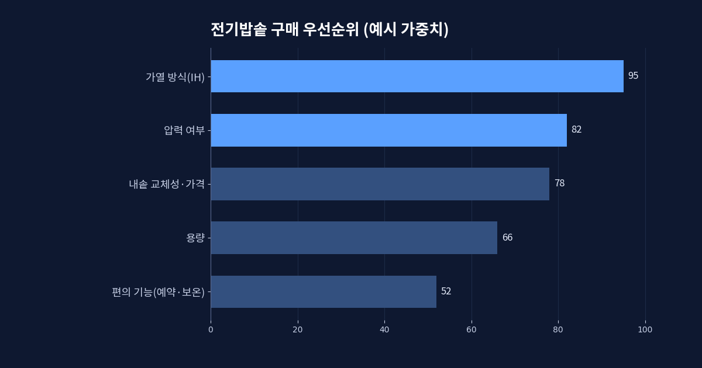

2026 전기밥솥 고르는 법 — IH·압력·내솥·용량 핵심만

전기밥솥은 한번 사면 5년 넘게 쓰는 물건이다. 그런데 매장에 가면 열판, IH, 압력, 무압력 같은 말이 뒤섞여 무엇이 나에게 맞는지 가늠하기 어렵다. 오늘은 밥솥을 고를 때 실제로 따져야 할 기준만 순서대로 정리한다.
1단계 · 가열 방식 — 열판 대 IH
밥솥의 밥맛을 가르는 가장 큰 변수는 가열 방식이다. 전통적인 열판 방식은 바닥의 발열판이 내솥을 데우는 구조다. 값이 싸고 구조가 단순하지만, 바닥부터 데워지다 보니 내솥 전체의 온도가 고르지 않아 위아래 밥알의 상태가 달라지기 쉽다. 반면 IH 방식은 내솥 자체를 자기장으로 통째로 발열시킨다. 솥 전체가 균일하게, 그리고 강하게 가열되기 때문에 밥알이 고르게 익고 찰기가 살아난다. 매일 밥을 짓고 밥맛에 민감하다면 IH가 확실히 유리하다.

2단계 · 압력 여부
여기에 압력이 더해지면 물이 100도보다 높은 온도에서 끓는다. 쌀이 더 빠르고 깊게 호화되어 밥이 차지고 부드러워진다. 현미나 잡곡을 자주 먹는다면 압력 방식이 특히 유리하다. 단단한 곡물도 무르게 익혀 주기 때문이다. 다만 압력 밥솥은 패킹(고무 패킹)과 추 같은 부품을 주기적으로 청소하고 교체해야 하고, 구조가 복잡한 만큼 값도 올라간다. 흰쌀 위주이고 관리를 간단히 하고 싶다면 IH 무압력만으로도 충분히 만족스럽다.

한 가지 덧붙이면, 압력 방식이라고 늘 최고 압력으로만 짓는 것은 아니다. 요즘 제품은 밥의 종류나 취향에 따라 압력을 달리하거나 아예 압력을 걸지 않는 모드를 함께 제공한다. 그래서 '압력 밥솥을 사면 흰쌀밥이 지나치게 물러진다'는 걱정은 대체로 기우다. 중요한 것은 최고 사양이 아니라, 내가 실제로 자주 짓는 밥에 맞는 모드가 있는지다. 화려한 기능 목록보다 내 식탁의 밥을 기준으로 보는 편이 후회가 적다.
3단계 · 내솥 — 매년 바뀌는 소모품
내솥은 밥과 직접 닿는 부품이라 코팅이 중요하다. 대체로 세라믹·불소수지 계열 코팅이 쓰이며, 두께가 두껍고 층수가 많을수록 열을 머금는 힘과 내구성이 좋다. 중요한 것은 내솥이 소모품이라는 점이다. 매일 주걱으로 긁고 씻다 보면 코팅은 몇 년 안에 벗겨진다. 그래서 밥솥을 고를 때 내솥을 따로 살 수 있는지, 그 가격이 얼마인지를 함께 확인해야 한다. 본체는 멀쩡한데 내솥 교체용을 구하기 어렵거나 지나치게 비싸면, 결국 밥솥 전체를 새로 사야 하는 상황이 온다.
코팅을 오래 쓰려면 금속 주걱 대신 전용 주걱을 쓰고, 내솥 안에서 밥을 비비거나 재료를 칼질하지 않는 습관이 크다. 사소해 보여도 내솥 수명을 몇 년씩 늘려 준다.

4단계 · 용량과 우선순위
용량은 인원수가 아니라 한 번에 짓는 밥의 양으로 정한다. 1~2인 가구는 3~4인용(6홉급)이면 넉넉하고, 3~4인 가구는 6인용(10홉급)이 표준이다. 밥을 한 번에 많이 지어 소분 냉동하는 편이라면 한 단계 큰 용량이 편하다. 반대로 늘 소량만 짓는데 큰 솥을 쓰면 바닥에 얇게 깔린 밥이 눌어붙기 쉽다. 정리하면 우선순위는 대체로 이렇다. 가열 방식(IH 여부) → 압력 여부 → 내솥 교체 가능성과 가격 → 용량 → 예약·보온 같은 편의 기능.

편의 기능은 마지막에 보되, 실제 생활 습관과 맞으면 만족도를 크게 끌어올린다. 예약 취사는 아침밥을 갓 지어 먹고 싶은 사람에게 유용하고, 보온 성능과 재가열 방식은 밥을 오래 두고 먹는 집에서 특히 체감된다. 다만 보온을 12시간 넘겨 두면 어떤 밥솥이든 밥이 누렇게 변하고 냄새가 생기므로, 보온 기능에 지나치게 기대기보다 소분 냉동 후 재가열하는 편이 밥맛에는 낫다. 음성 안내나 스마트폰 연동 같은 기능은 있으면 편하지만 밥맛과는 무관하니, 우선순위의 맨 끝에 두면 된다.
좋은 밥솥은 비싼 밥솥이 아니라 내 식습관에 맞는 밥솥이다. 매일 흰쌀밥을 소량 짓는 사람과, 주말마다 현미 잡곡을 대량으로 짓는 사람에게 정답은 다르다. 위 순서대로 자기 습관을 대입해 보면, 매장의 복잡한 용어 속에서도 나에게 필요한 한 대가 또렷해질 것이다.